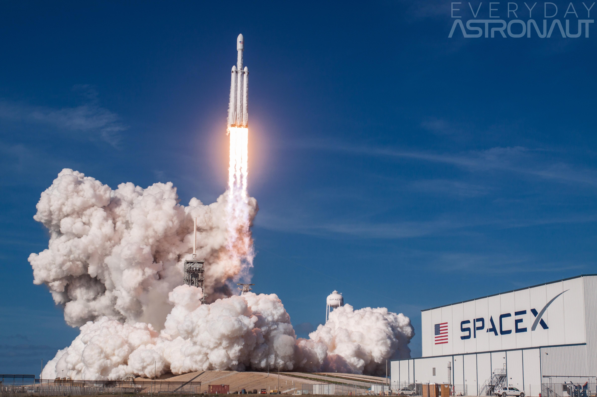
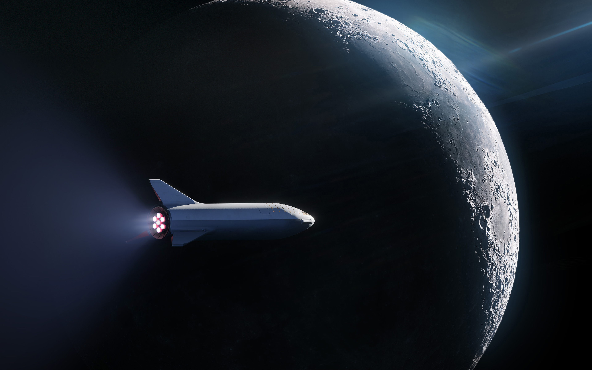

Advanced Launch Mechanics
A successful orbital launch requires precise timing and execution across multiple critical phases.
- Ignition and Liftoff: The primary engines ignite, pushing the rocket off the launch pad.
- Max Q: The moment of maximum aerodynamic pressure on the vehicle.
- Main Engine Cut-Off (MECO) & Stage Separation: The first stage completes its burn and detaches.
- Orbit Insertion: The second stage engine ignites to carry the payload into orbit.

Payload Capacities & Capabilities
Modern launch vehicles are designed to carry diverse payloads efficiently into various orbits.
- Low Earth Orbit (LEO): Deployment of satellite constellations for global internet coverage.
- Geostationary Transfer Orbit (GTO): Delivery of heavy telecommunications satellites.
- Interplanetary Missions: Sending rovers and probes to Mars and beyond.
- Reusable Fairings: Recovering payload protective shells to reduce launch costs.
